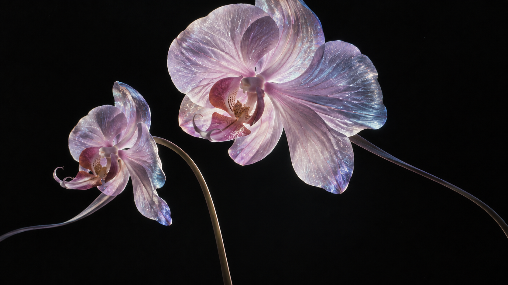
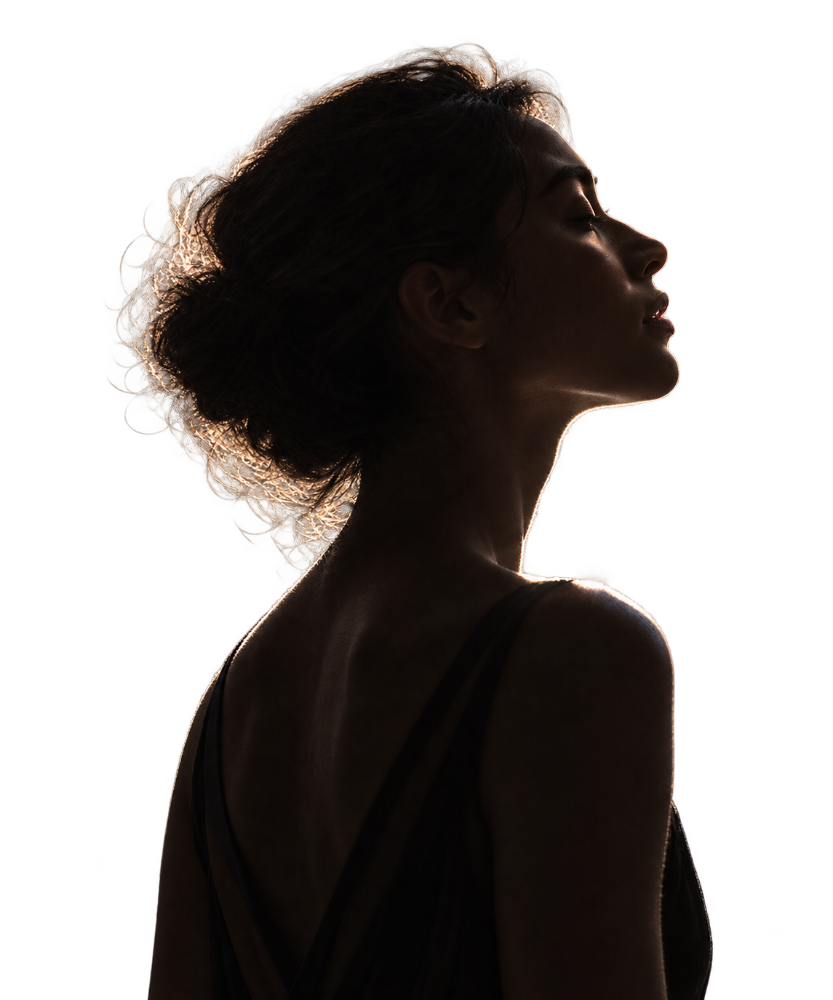

PLAYGROUND01 / 05

New
freedoms
of
imagination.
A different point of view.imagination.
A little space for possibility.
Create something new.

Dream
STUDIO
Explore ↗STUDIO
↕ 在画面上滚动，拉开距离
THE
LISTENING
ROOM.
LISTENING
ROOM.
GOOD SOUNDS.
DIFFERENT PERSPECTIVES.
拖动唱片 · 滚轮切换
FORMA®Material / Motion / FeelingEST. 2026
Designed in glass.
内容被裁进五片玻璃，分别随指针倾斜。
REFLECTIONS IN MOTION5 INDEPENDENT PANES
↗ 移动指针，感受光与倾斜
CREATIVE ARCHIVEFIVE LITTLE POSSIBILITIES ↗
移到文件夹上，让灵感展开。手机上点击打开 · 指向卡片，让它浮起
ORGANIC / 05SMALL FORCES. BIG MOVEMENTS.
ORDER MEETS PLAYA little
A little
chaos.
轻轻拨动，秩序开始流动。
550 LIVING PARTICLES移动 / 滑动指针 ↗
01
镜头拉远Layered scene collapse
画面边界收成蓝色胶囊，人物独立留在前景。文字被遮罩裁掉，花朵与人物以不同速度后退。
MASK × LAYERS